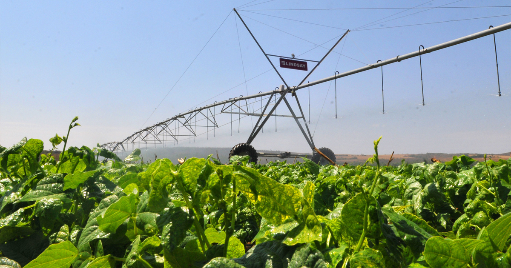

Consumo e produção
Alcançar a gestão sustentável e o uso eficiente dos recursos naturais. O sistema atual enfrenta desafios como o alto desperdício (30% mundialmente), a necessidade de sustentabilidade, e a intensificação tecnológica, movida pelo mercado interno e exportações.

Agricultura sustentável
Dobrar a produtividade agrícola e a renda dos pequenos produtores de alimentos, particularmente das mulheres, povos indígenas, agricultores familiares, pastores e pescadores, inclusive por meio de acesso seguro e igual à terra, outros recursos produtivos e insumos, conhecimento, serviços financeiros, mercados e oportunidades de agregação de valor e de emprego não agrícola.

Saneamento básico
Tecnologias simples como a fossa séptica biodigestora e o clorador Embrapa permitem o tratamento eficiente de dejetos, reduzindo a contaminação do solo e lençóis freáticos.